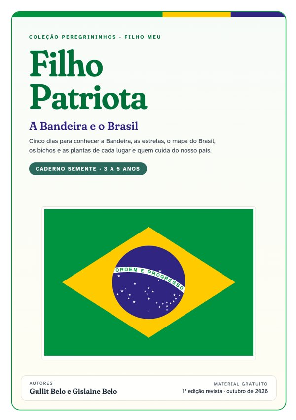
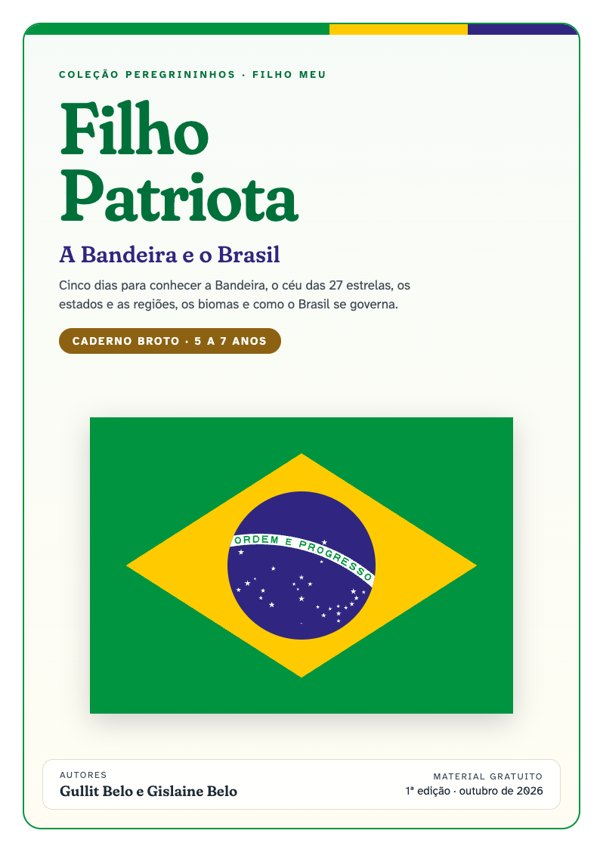
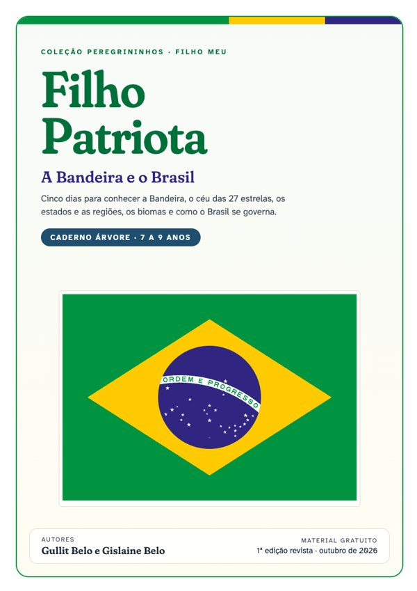
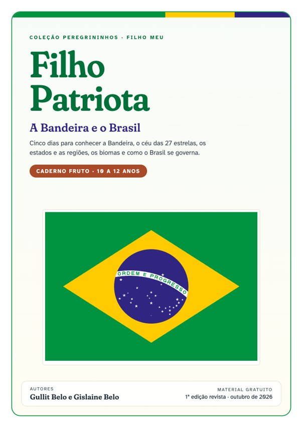

Filho PatriotaA Bandeira e o Brasil, em cinco dias
Quatro cadernos, de 3 a 12 anos, para conhecer a Bandeira e suas 27 estrelas, os estados, os biomas e como o Brasil se governa, em cinco dias de 20 a 30 minutos. Conteúdo conferido nas fontes oficiais, com um versículo de Provérbios por dia.
Quero os 4 cadernos grátisPreencha nome, e-mail e WhatsApp e baixe na hora, sem custo.

Cinco dias, cinco descobertas
Cada dia leva cerca de 20 a 30 minutos. As quatro versões seguem o mesmo roteiro, com profundidade de acordo com a idade.
A Bandeira
Partes, cores, lema, história e como respeitar a Bandeira.
O céu da Bandeira
As constelações e a estrela de cada estado.
O Brasil no mapa
Estados, capitais, regiões e países vizinhos.
Biomas
Amazônia, Cerrado, Mata Atlântica, Caatinga, Pampa e Pantanal.
Como o Brasil se governa
República, federação, os três Poderes, a Constituição e os presidentes.
Um caderno para cada idade
Os irmãos estudam juntos o mesmo tema, cada um no seu nível. Para os pequenos, pintar, contar e ligar; para os maiores, tabelas, mapas e o básico da Constituição.

3 a 5 anos
Cores e formas da Bandeira, contar estrelas, pintar o mapa e conhecer os bichos de cada bioma.

5 a 7 anos
Os símbolos nacionais, as regiões, as capitais e os três Poderes em frases curtas.

7 a 9 anos
Tabelas de estados e estrelas, fronteiras, biomas e a linha do tempo dos presidentes.

10 a 12 anos
Desenho oficial da Bandeira, forma de Estado, sistema de governo e os artigos da Constituição.
Algumas páginas
Receba os quatro cadernos agora
Preencha os dados e os links para baixar aparecem na hora. Imprima o caderno de cada filho e comece quando quiser.
- 4 cadernos em PDF (Semente, Broto, Árvore e Fruto)
- 5 dias de atividades em cada um, com respostas
- Certificado "Filho Patriota" no fim
Feito por Gullit e Gislaine Belo, autores da coleção Filho meu, com conteúdo conferido na Constituição, no IBGE e na Lei dos Símbolos Nacionais.
Pronto! Bom proveito.
Toque em cada caderno para baixar. Baixe agora os quatro arquivos e guarde no seu celular ou computador.
Caderno Semente3 a 5 anosBaixar PDF Caderno Broto5 a 7 anosBaixar PDF Caderno Árvore7 a 9 anosBaixar PDF Caderno Fruto10 a 12 anosBaixar PDF Enviar para outra família pelo WhatsApp Conheça a coleção Filho meuAntes de baixar
É gratuito mesmo?
Sim. Você preenche nome, e-mail e WhatsApp e os links dos quatro cadernos aparecem na mesma hora, sem pagamento.
Qual caderno é o do meu filho?
Semente para 3 a 5 anos, Broto para 5 a 7, Árvore para 7 a 9 e Fruto para 10 a 12. Você recebe os quatro, então os irmãos estudam o mesmo tema juntos, cada um no seu nível. Se a criança estiver entre duas faixas, comece pela menor.
Como uso o material?
Imprima o caderno em folha A4 e faça um dia por vez, de 20 a 30 minutos. Cada dia traz a leitura, as atividades e um versículo de Provérbios para conversar em família. As respostas ficam no fim, para os pais.
O material fala de política?
Não. Ele apresenta os símbolos nacionais, o mapa do Brasil e as instituições como estão na Constituição e nas leis, sem partidos e sem candidatos.
De onde vem o conteúdo?
Da Constituição de 1988, da Lei nº 5.700/1971 (símbolos nacionais), da Lei nº 8.421/1992 (as estrelas de cada estado), do IBGE, do Itamaraty e da Biblioteca da Presidência da República.
Há outros títulos para a fé e o caráter dos seus filhos
Cadernos para estudar com os filhos, um tema por vez, com a Palavra de Deus no centro.